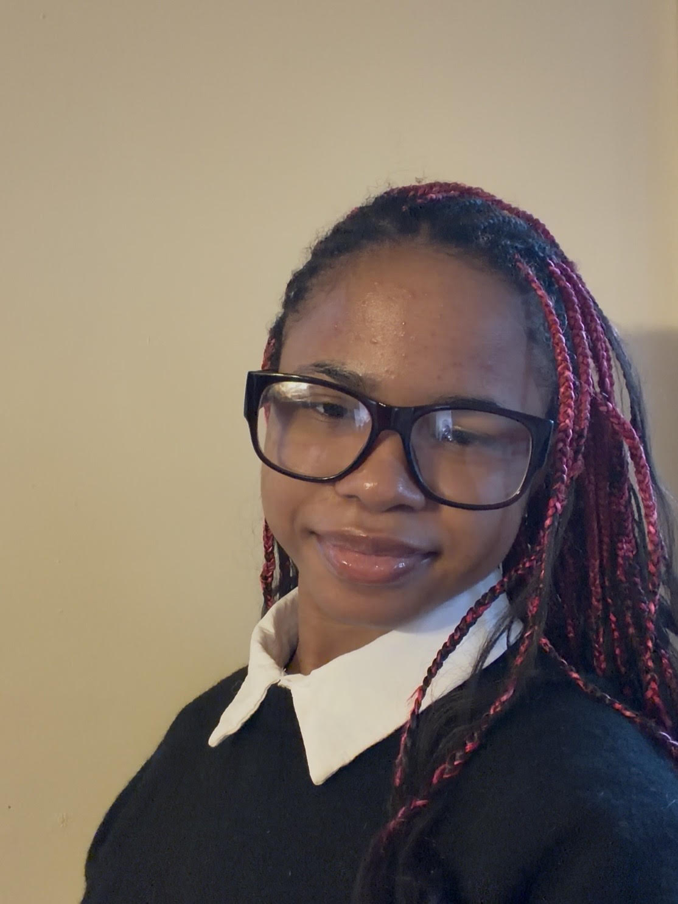
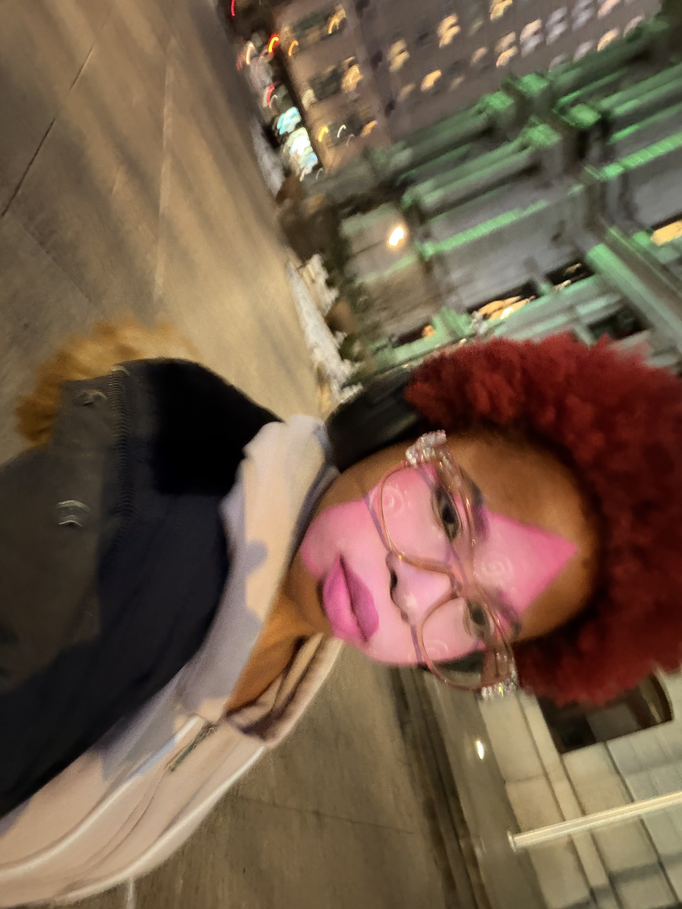

They/Them || 18 Y/O || Philly-Native || CCP Freshman || Aspiring Artist
Hii! Welcome to my website! My name is Samirah Johnson, but you can call me Sam. I am an 18-year-old born and raised in Philadelphia, PA. I am a recent (June 2026) graduate of Reach Cyber Charter School, and an incoming freshman at the Community College of Philadelphia. I am unsure of what I want to major in at the moment. I do consider myself an aspiring artist, poet, general creative, and a bit of a techie though, so I am hoping to find a major that will allow me to explore and integrate those interests.

Being born and raised in the mural capital of the world, I have been exposed to a plethora of different art forms and the cultures that influence them. I feel the impact of Philly's diverse art scene has inspired me to explore and cultivate my own artistic style from a very young age. This has led me to develop a passion for painting and poetry, both of which I have been improving on for the past two years.

I believe that art is a form of self-expression, and I use it to express my thoughts, feelings, and experinces. I feel that my art is most self-expressive when I am wearing it, which is where my passion for makeup comes in. I have been experimenting with makeup for the past year and have worn some of my looks while I am out and about. I feel that makeup has allowed me to grow out of my shell and express myself in ways that I never thought I could.